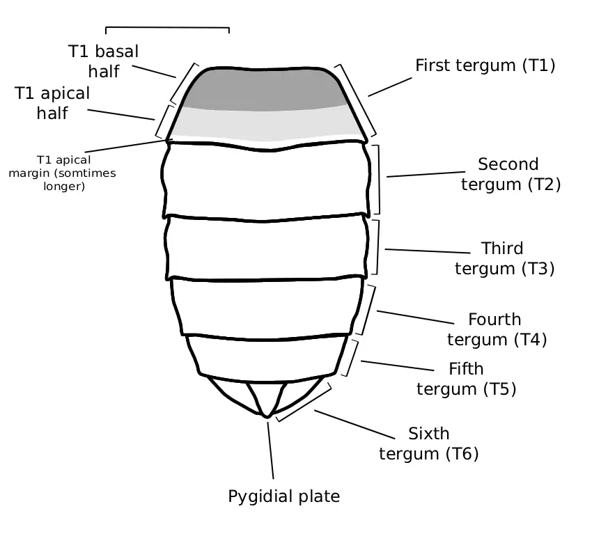
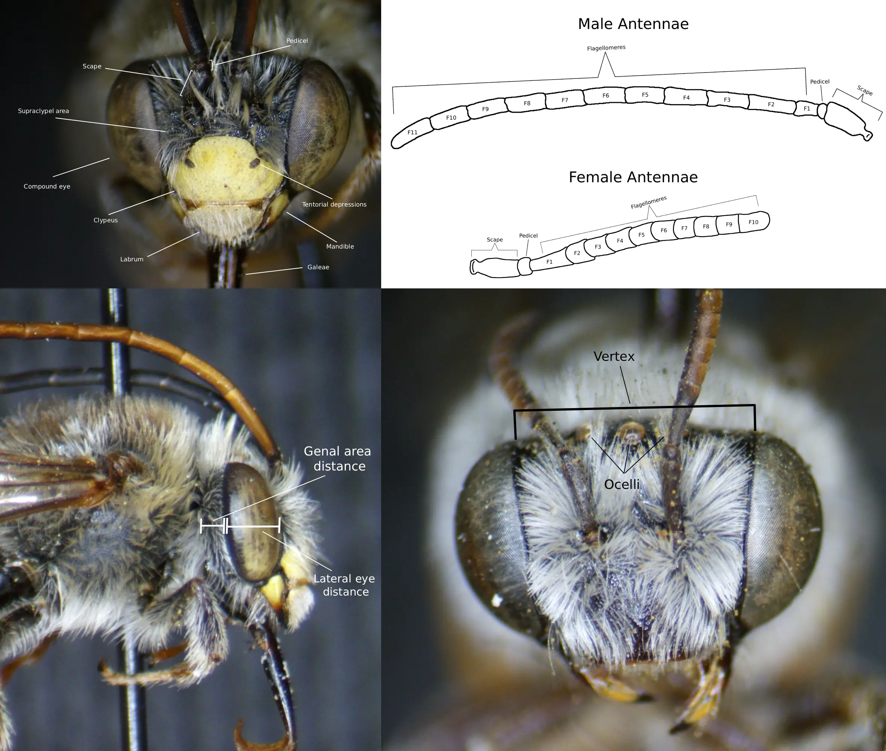
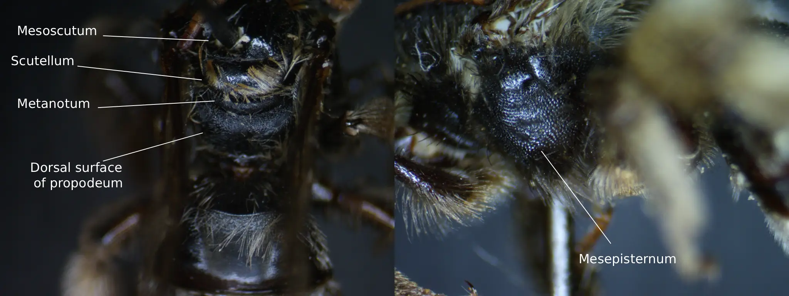
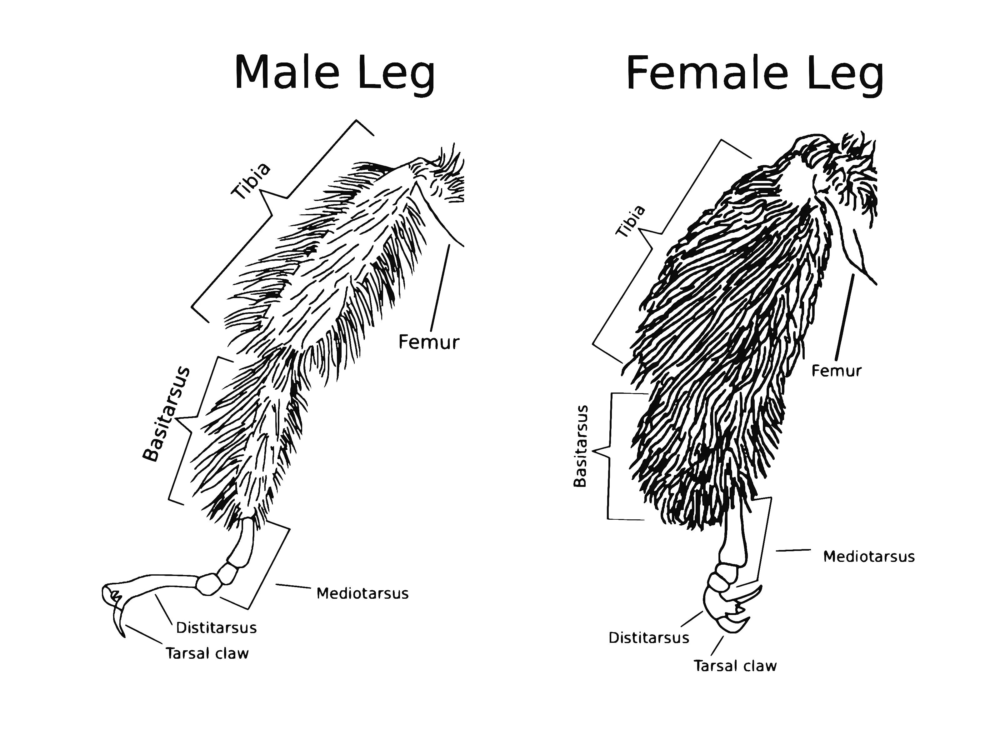
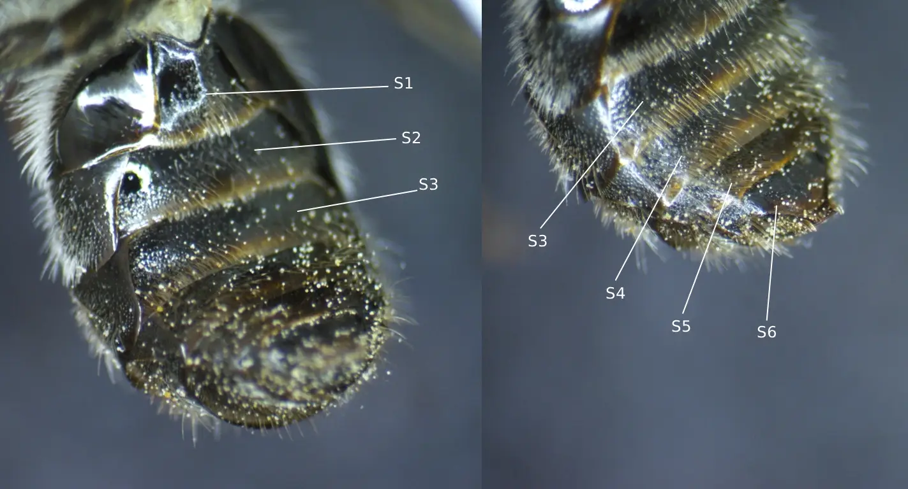
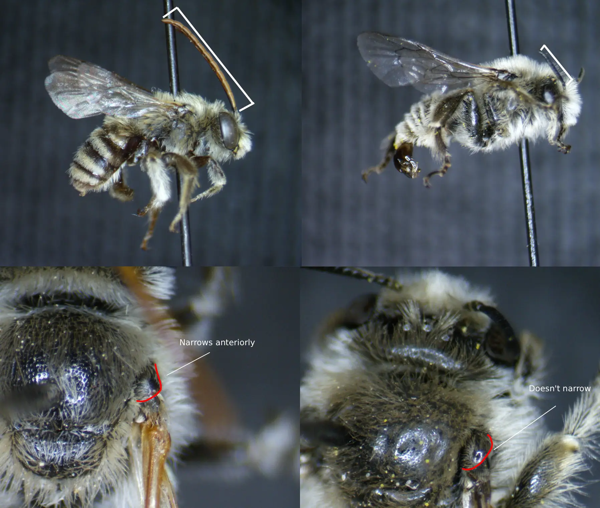
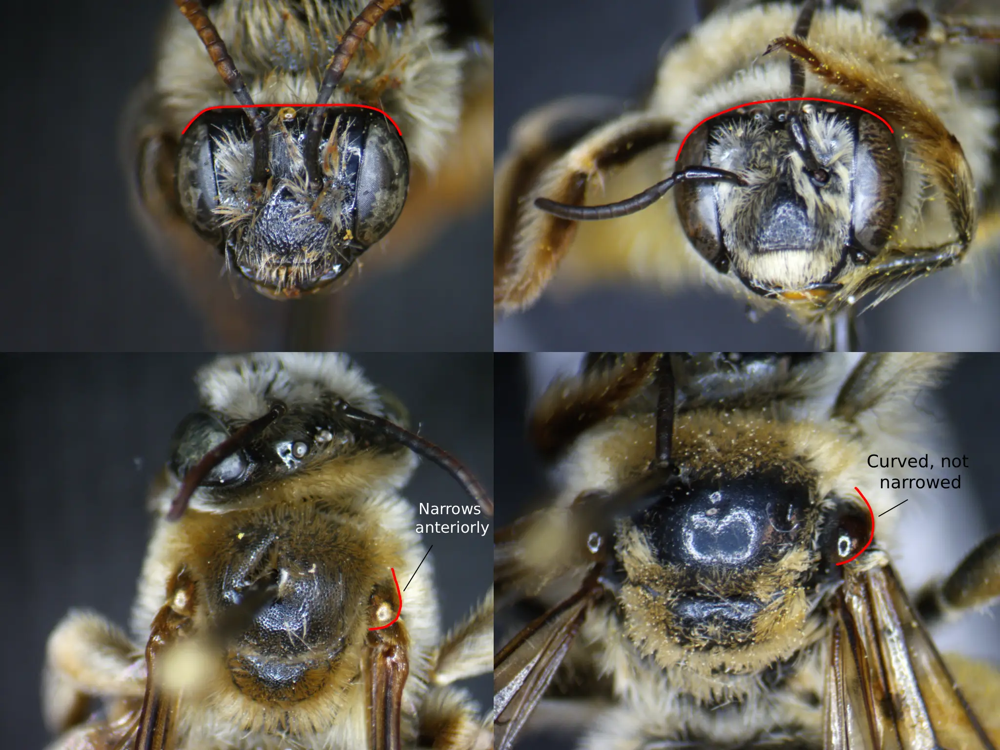
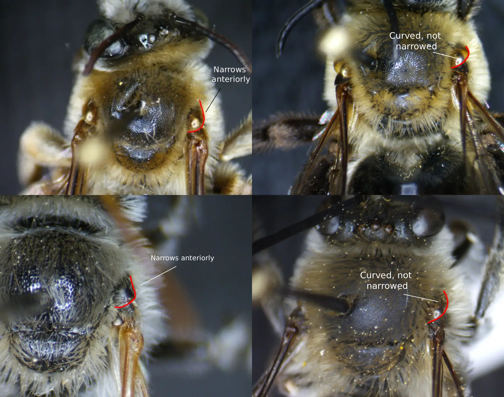
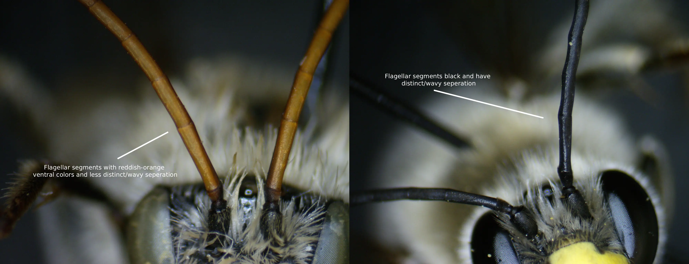
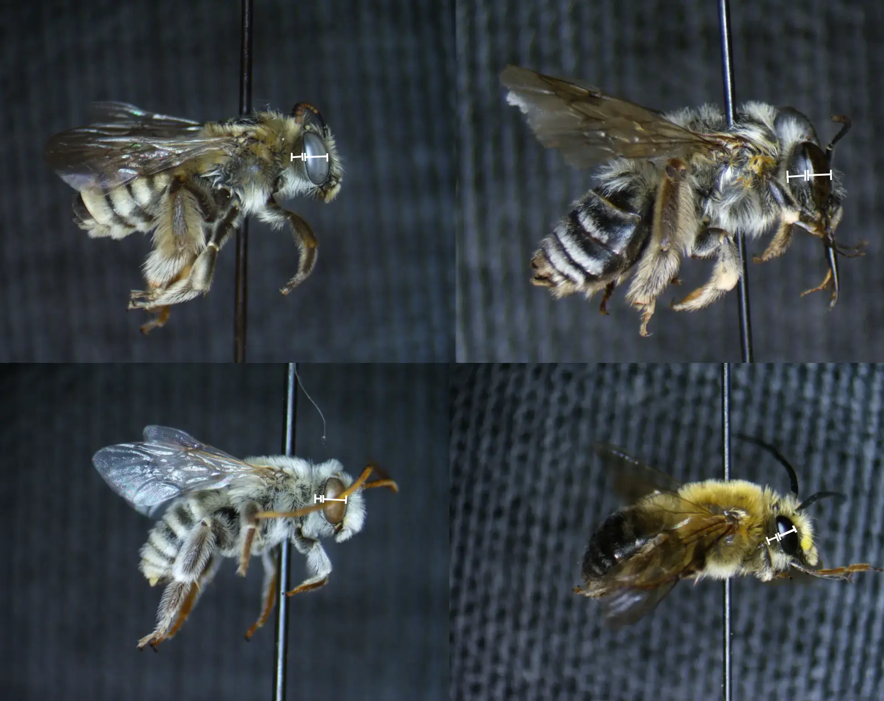

Introduction
Melissodes Latreille is a common genus of wild bees from the tribe Eucerini occurring in the New World (Laberge, 1956a; Laberge, 1956b; Laberge, 1961; Wright et al., 2020). As of now, a total of 129 species have been described in this genus making it the second largest in the Eucerini tribe (Wright et al., 2020). 25 of these species have been documented in Oregon (see table 1) and 3 have known ranges that overlap portions of Oregon (see table 2). Melissodes are known to be important pollinators in crops such as cotton (LaBerge, 1956), alfalfa (LaBerge, 1956), muskmelons (Winfree, et al., 2007), watermelon (Campbell et al., 2018; Winfree, et al., 2007), canola (O'Brien & Arathi, 2018), and coffee (Ngo et al., 2013), but most chiefly so in sunflowers (Parker et al., 1981). Parker (1981) documented that a species of Melissodes (M. agilis) is a more proficient pollinator in sunflowers than that of the western honeybee. Although their importance has been expressed in agricultural settings (Parker, 1981) and likely in wild ecosystems due to their abundance (Laberge, 1956a), identification of Melissodes beyond genus is often scarce due to the subtle characters that differentiate between species. The genus was last revised in a three-part series by W. E. Laberge (1956a; 1956b; 1961) as well as a later correction to the M. (Callimelissodes) subgeneric key (Laberge, 1963), in which detailed species-specific treatments, generic and subgeneric keys, and distributions were first presented, representing a cornerstone for current-day Melissodes knowledge. However, the keys presented in these revisions can be, at times, slightly ambiguous and overwhelming due to the sheer number of species and intraspecific variation. As a genus, Melissodes are widespread and range over the entirety of the New World, but species differ largely in what areas they occupy (Laberge, 1956a; Laberge, 1956b; Laberge, 1961; Wright et al., 2020). Many species are restricted to South America and Central America, which, when trying to identify North American species using a key designed to include all 129 species, drastically inflates the amount of information needed to identify an individual. The same can be said for species whose ranges are restricted to specific portions of North America that differ from the location in which a specific individual was found. Herein, a key developed from that of Laberge (1956a; 1956b; 1961; 1963) using the same structure and traits but incorporating subgeneric splits and only including species who occur, or are likely to occur, in Oregon is presented. Although using a regional key such as this may not yield new state records for Oregon, apart from those whose ranges overlap this area and are included in the key, it may assist in ease of identification beyond genus allowing for species-level studies and less chances for drastic misidentification due to individual variation. Along with this, species descriptions and comparisons, derived from that of Laberge, (1956a; 1956b; 1961) are given to further aid in identification.
Table 1. A table of Melissodes species with their citations to the resource which documents their occurance in Oregon.
| Species | Citations |
|---|---|
| Melissodes agilis | (Laberge, 1961; Ikerd, 2019; Johnson, 2020; Best et al., 2022a; McElrath, 2023) |
| Melissodes bimatris | (Laberge, 1961; Ikerd, 2019; Johnson, 2020; McElrath, 2023; Bentley & Osborn, 2025) |
| Melissodes clarkiae | (Laberge, 1961; Best et al., 2022a; Bentley & Osborn, 2025) |
| Melissodes communis | (Laberge, 1956a; Ikerd, 2019; Johnson, 2020; Best et al., 2022a; Bentley & Osborn, 2025; iBOL, 2025) |
| Melissodes dagosus | (Laberge, 1956b; Ikerd, 2019; McElrath, 2023; Bentley & Osborn, 2025) |
| Melissodes glenwoodensis | (Laberge, 1961; Ikerd, 2019; McElrath, 2023; Bentley & Osborn, 2025) |
| Melissodes lupinus | (Laberge, 1961; Ikerd, 2019; Johnson, 2020; Best et al., 2022a; McElrath, 2023; Bentley & Osborn, 2025; iBOL, 2025) |
| Melissodes lustrus | (Laberge, 1961; Ikerd, 2019; Johnson, 2020; Best et al., 2022a; McElrath, 2023; Bentley & Osborn, 2025) |
| Melissodes lutulentus | (Laberge, 1961; Ikerd, 2019; McElrath, 2023; Bentley & Osborn, 2025) |
| Melissodes menuachus | (Laberge, 1961; Ikerd, 2019; McElrath, 2023) |
| Melissodes metenuus | (Laberge, 1961; Ikerd, 2019; Johnson, 2020; Best et al., 2022a; McElrath, 2023; Bentley & Osborn, 2025) |
| Melissodes microstictus | (Laberge, 1961; Johnson, 2020; Best et al., 2022a; Ikerd & Engler, 2023; McElrath, 2023; Bentley & Osborn, 2025; iBOL, 2025) |
| Melissodes pallidisignatus | (Laberge, 1961; Ikerd, 2019; Johnson, 2020; Best et al., 2022a; McElrath, 2023; Bentley & Osborn, 2025) |
| Melissodes paululus | (Ikerd, 2019) Note, Laberge (1961) had Oregon within M. paululus’ range, just none had been collected. |
| Melissodes plumosus | (Laberge, 1961; Ikerd, 2019) Note, likely the same specimen. |
| Melissodes pullatellus | (Laberge, 1961; Ikerd, 2019) Note, likely the same specimen. |
| Melissodes rivalis | (Laberge, 1956b; Ikerd, 2019; Johnson, 2020; Best et al., 2022a; McElrath, 2023; Bentley & Osborn, 2025; iBOL, 2025) |
| Melissodes robustior | (Laberge, 1961; Ikerd, 2019; Best et al., 2022a; McElrath, 2023; Bentley & Osborn, 2025; iBOL, 2025) |
| Melissodes saponellus | (Laberge, 1961) |
| Melissodes semilupinus | (Laberge, 1961; Ikerd, 2019; Johnson, 2020; McElrath, 2023; Bentley & Osborn, 2025) |
| Melissodes stearnsi | (Laberge, 1961; Bentley & Osborn, 2025) |
| Melissodes subagilis | (Laberge, 1961; Ikerd, 2019; Johnson, 2020; McElrath, 2023) |
| Melissodes tepidus | (Laberge, 1956a; Ikerd, 2019; McElrath, 2023; Bentley & Osborn, 2025) |
| Melissodes tristis | (Ikerd, 2019) |
| Melissodes verbesinarum | (Laberge, 1961) |
Table 2. A table of Melissodes species with their citations to the resource which documents their ranges which overlap Oregon (i.e. species with a likely occurance in Oregon that hev yet to be documented).
| Species | Citations |
|---|---|
| Melissodes grindeliae | (Laberge, 1961) |
| Melissodes vernalis | (Laberge, 1961) |
| Melissodes nigracauada | (Laberge, 1961) |
How to use this resource
This field guide is designed to aid in identifying Melissodes species in Oregon. This includes comparisons of similar genera such as Eucera and Diadasia, which have overlapping ranges and similar morphologies, comparisons of similar species within the genus, and regional keys. Ranges have been determined using historic taxonomic literature in tandem with GBIF occurrence records (see tables 1 & 2). This data was also used to evaluate distributions, phenology, and host-plant relationships. Each species has a full treatment used to assist in identification, locality, morphology, and more (species treatments are outlined below).
Species treatments
Each species description consists of what follows: Morphological descriptions, particularly of key diagnostic features with accompanying photos of the feature; distribution maps plotted in Leaflet using OpenStreetMap (OSM) derived from authoritative taxonomic literature (Laberge, 1956a; 1956b; 1961) and recent sampling from GBIF occurrence records to produce an up-to-date range; phenological graphs created using data from GBIF occurrence records; flower records and/or preference if lists are too extensive; when applicable, notes concerning taxonomic history and/or distinctive identifiers; a similar naming convention to that used by the North American Native Bee Collaborative (2020) will be adapted for this guide, that being at the beginning of each species treatment, a group-name is given to species of similar morphologies (if a group-name is absent, then the species does not specifically resemble another and instead, the word “distinct” will take the place of group-name). Precursing each of the species treatments, the genus will be treated. This will not include a group-name as no other genera are described within this guide; similar genera will be listed instead.
Reference Images
As can be determined below, subtle differences are used in delimiting species of Melissodes. To describe these delimiting characters, terms have been applied to specific anatomical features and structures. Below is a list of Melissodes images with labeled anatomical features, the terms used to describe these features will be used throughout the guide; definitions for these terms are also in the glossary with parenthesized use cases.
Fig. 1. Fig. 1. An illustration of the dorsal metasomal structure of a female Melissodes that has been redrawn and relabeled from that of Laberge (1956a). Only the first tergum is regionally labeled, but T2-T6 follow the same patterns (male Melissodes have 7 terga). Originally presented as “Fig. 20. Diagram of metasoma (approximately X 11) of M. communis showing areas of vestiture. Regional terms are on the left and descriptive terms referring to vestiture are on the right. Similar types of shading indicate similar types of pilosity.
Fig. 2. Diagrams representing the facial anatomy of a Melissodes. Photo credits: Christopher Wilson.
Fig. 3. Diagrams representing the thoracic anatomy of a Melissodes. Photo credits: Christopher Wilson.
Fig. 4. Diagrams representing the leg anatomy of a Melissodes. One diagram per sex is given due to their sexual diamorphism.

Fig. 5. Wings of a Melissodes (cells shown by capital letters). Cells: A, anal; D, discoidal: MC, marginal; MD, median; SM, submarginal; SMD, submedian.
Fig. 6. Fig. 6. Labeled images illustrating the ventral structure of a Male Melissodes' metasoma. The sterna are labeled S1-S6; note that this is a male, females have only 5 sterna.
Identification
Because of their sexual diamorphism, two keys for the species of the genus Melissodes in Oregon are listed below (male and female keys). These keys are developed from those of Laberge (1956a; 1956b; 1961; 1963), but include subgeneric splits and only Melissodes that are known to inhabit, or have ranges that overlap, Oregon. If a couplet regarding a certain character seems ambiguous, check morphologically similar species in their respective treatments.
Key to the bees of the genus Melissodes in Oregon
Males
1. The fourth sternum and often third sternum’s posterior margins are either widely convex, or developed into a thin, broad, colorless hyaline flap. Go to 2
The fourth and third sterna’s posterior margins are either straight or slightly concave, but either way, they never develop into a flap. Go to 10
2. (1) The fourth sternum’s posterior apical area is developed into a thin, broad, colorless hyaline flap that’s the same length of the rest of the sternum medially and is medley weakly emarginate. The second sternum is widely convex and the apical area is hyaline. The third sternum has a hyaline, bilobed, wide flap that is similar to the second sternum, although the flap is shorter. The fifth sternum is the same as the second. The clypeus is usually white to cream-colored and on rare occasions, sometimes pale yellow ... stearnsi
The fourth sternum’s posterior apical area isn’t developed into a thin, broad, colorless hyaline flap, but it is widely convex and weakly medially emarginate. Sterna two and five have faintly convex to straight apical margins and the third sternum has a convex to nearing straight apical margin. The clypeus is yellow, cream-colored, or white. Go to 3
3. (2) F4-F10 have longitudinal depressions on the outer surface that are shallow, narrow, and shiny. Usually, F3 and F11 have partially developed depressions as well. Go to 5
F5-F9 have longitudinal depressions on the outer surface that are shallow, narrow, and shiny. At most, F10 also has a developed depression, however F11 does not. Go to 4
4. (3) The first flagellar segment’s minimum length is more than one-fourth of the second segment’s maximum length. The flagellum has no segments that have shallow narrow depressions laterally. However, the flagellar segments might have some flattened areas. The galeae are matte and dulled dorsally due to regular, dense tessellation ... nigracauda
The first flagellar segment’s minimum length is less than, or equal to, one-fourth of the second segment’s maximum length. The galeae are usually shiny to dull dorsally. However, if the galeae are dull, then F1 is less than one-fourth of F2. There are at least a few flagellar segments that have shallow, narrow, longitudinal depressions on the lateral areas. Go to 8
5. (3) The length of the penultimate flagellar segment is two times its width or less. Go to 6
The length of the penultimate flagellar segment is longer than two times its width. Go to 7
6. (5) The galeae are matte and dull dorsally due to coarse, dense, and regular tessellation. The first flagellar segment’s minimum length is less than one-fifth of the second segment’s maximum length ... ablusus
The galeae are somewhat shiny to shiny dorsally but faintly dulled due to delicate reticular shagreening, but the surface has no tessellation. F1’s minimum length is more than one-fifth of F2’s maximum length ... clarkiae
7. (5) The apical areas of the second and third terga have simple, erect to suberect hairs and the galeae are often shiny without shagreening or delicately reticularly shagreened. The third flagellar segment usually has a well defined ventrolateral depression. Go to 9
The apical areas of the second and third terga are glabrous and the galeae are often shagreened dorsally. The third flagellar segment usually does not have, or has a poorly defined and short, ventrolateral depression ... lustrus
8. (4) The apical areas of the second and third terga have suberect hairs and the galeae are often dull due to dense shagreening. The first flagellar segment’s minimum length is usually less than one-fifth of the second segment’s maximum length ... lupinus
The apical areas of the second and third terga are glabrous as well as impunctate and the galeae are either shiny or dull due to shagreening. The first flagellar segment’s minimum length is usually less than, or equal to, one-fifth of the second segment’s maximum length ... glenwoodensis
9. (7) The galeae are dorsally shiny and unshagreened, or if shagreened, then delicately so on less than, or equal to, the apical half. Sterna 2-4 are medially shiny and are delicately reticularly shagreened. The clypeus is coarsely punctate basally ... metenuus
The galeae are somewhat dull dorsally due to delicate distinct shagreening. Sterna 2-4 are only moderately shiny medially due to shagreening. The clypeus has small round basal punctures ... plumosus
10. (1) The first flagellar segment’s maximum length is approximately 0.4 times or more the maximum length of the second segment and the clypeus is distinctly protuberant, protruding beyond the eye by three-fourths of an eye's width in profile or more ... rivalis
The clypeus is usually protruding beyond the eye by three-fourths of an eye's width in profile or less or if it is, then the first flagellar segment’s maximum length is less than 0.4 times the maximum length of the second. Go to 11
11. (10) The first flagellar segment’s minimum length is notably longer than half the second segment’s maximum length, the pubescent bands on terga 2-5 are apical, and the pubescent bands on terga 2-5 are approximately the same width across each respective terga (not widening or narrowing) and each tergal band is approximately the same width as the other tergal bands ... dagosus
The first flagellar segment’s minimum length is equal to, or shorter than half the second segment’s maximum length, the pubescent bands on terga 2-4 aren’t usually apical, and the pubescent bands on terga 2-4 aren’t usually the same width across each respective terga (not widening or narrowing) and each tergal band isn’t usually the same width as the other tergal bands. These bands are often subapical and interrupted medially. Go to 12
12. (11) Terga 2-5 do not have any pale pubescent bands, or if there are pale pubescent bands, then they are all interrupted medially. However, if one or two of the pubescent bands are complete, then the labrum is almost, or entirely, pale or the thoracic hairs are mostly black to black and white mixed. Go to 14
Terga 2-5 usually have complete pale bands and on occasion one or more are interrupted. If there are only one or two complete bands, then the labrum is mostly, or all, black and thoracic hairs are bright rusty-red. Go to 13
13. (12) The last two terga have black to dark brown hairs. The labrum is entirely pale and the mandibles often have basal yellow macula. Go to 14
The last two terga only have pale hairs, or the labrum minimally is dark marginally and the mandibles usually do not have basal pale macula, or both of these two traits combined (mandibles can have maculations). Go to 15
14. (12 or 13) The second tergum’s wide distal pale band is equal to, or almost equals, the medial portion of the apical area. The fourth tergum’s wide pale band is more than, or equal to, fourth times the medial portion of the apical area ... tepidus
The second tergum’s distal band is narrow and equal to, or less than, one-half the width of the medial portion of the apical area. If the second tergum’s distal band is, or almost is, as wide as the medial portion of the apical area, then the fourth tergum’s pale band is clearly narrower than fourth times the medial portion of the apical area ... communis
15. (13) The labrum is entirely light-colored and has no brown apical margin. The mandibles have a large pale spot at their bases ... verbesinarum (in part)
The labrum usually has some dark colorations on its margin and the mandibles usually don’t have large basal pale spots. Go to 16
16. (15) The length of the penultimate flagellar segment is less than three times its width (maximum length and narrowest width) and the antennae does not surpass the pterostigma in repose. Go to 17
The length of the penultimate flagellar segment is equal to or more than, three times its width (maximum length and narrowest width) and/or the antennae surpass the pterostigma in repose. Go to 18
17. (16) The labrum and the mandibles are black and have no yellow maculations. When in repose, the antennae reach the pterostigma ... grindeliae (in part)
The labrum and usually the mandibles have some form of yellow maculations (common, but not always on the mandibles). When in repose, the antennae usually do not reach the pterostigma ... pallidisignatus
18. (16) The first flagellar segment’s maximum length is more than one-third of the third segment’s minimum length. Go to 19
The first flagellar segment’s maximum length is less than, or equal to, one-third of the third segment’s minimum length. Go to 23
19. (18) The first tergum has an obvious and well developed distal band consisting of appressed or subappressed, dense, white pubescence that reaches and obscures the apical margin across the entire tergum (sometimes the apical band is worn). Go to 20
The first tergum doesn't have an obvious apical band of white, dense, hairs that obscure the apical margin, or if there are dense apical hairs present, then they only occur on the lateral areas and are equal to, or less than, one-third of the width of the entire tergum. If there is an apical band across the entire tergum, then it doesn’t medially obscure the apical area. Go to 21
20. (19) The mandibular bases have a yellow macula and the labrum is mostly yellow and has a darkened border. The first flagellar segment’s minimum length is usually more than, or equal to, one-third of the third segment’s maximum length ... semilupinus
The mandibular bases are black with no yellow maculations and the labrum is completely black, or sometimes has a small mediobasal pale macula. The first flagellar segment’s minimum length is usually less than one-third of the third segment’s maximum length ... bimatris
21. (19) The mandibular bases usually do not have a pale macula, or if there is a pale macula, then the scutellar and mesoscutal hairs are medially black. The galeae are dull due to dense shagreening ... robustior
The mandibular bases usually have a yellow macula and the mesoscutal hairs aren’t dark brown or black, or the galeae are shiny and not shagreened. Go to 22
22. (21) The labrum and bases of the mandibles are yellow and the mesoscutal and scutellar hairs aren’t dark medially ... menuachus (in part)
The labrum and the bases of the mandibles have no pale maculations and the mesoscutal and scutellar hairs are abundantly dark medially ... grindeliae (in part)
23. (18) The clypeus is entirely, or at least partially, black. Go to 24
The clypeus is entirely light excluding the dark spots denoting the tentorial depressions or the anterior notches and margin. Go to 26
24. (23) The clypeus is often partially yellow and the flagellar segments have a depressed or flattened shiny portion laterodorsally. The galeae are unshagreened and shiny above excluding the tips. All of the terga have opaque dark reddish brown to black apical areas; not hyaline ... paululus
The clypeus is partially or entirely black and the flagellar segments have no depressed or flattened shiny laterodorsal areas. The galeae vary in sculpture but are usually shagreened or tessellated above. All of the terga are hyaline apically. Go to 25
25. (24) The clypeus is completely black and usually has a shiny boss medially. The vestiture of the body is usually white. The antennae are very long and the underside of flagellar segments 2-11 are red with the last one or two flagellar segments being darker than the rest of the flagellar segments ... tristis (in part)
The clypeus usually has a yellow marking and the flagellum is entirely black excluding a small ventral pale macula ... microstictus
26. (23) The mandibular bases have a yellow macula and the labrum has a large mediobasal pale macula (at least equal to, and usually larger than, one-third of the labrum). Go to 27
The mandibular bases do not have a yellow maculation and the labrum does or does not have a mediobasal pale macula. Rarely do both the labrum and mandibular bases have pale macula, but if so, then the macula on the labrum is less than one-third of the area of the labrum and/or the macula on the bases of the mandibles are tiny. Also, rarely is the labrum black and the mandibular bases bearing tiny yellow macula. Go to 29
27. (26) The galeae are dulled above due to fine reticular shagreening and the wings are yellow to red. The hairs on the head and thorax are minimally pale ochraceous and often pale rusty-red ... agilis
The galeae are shiny above with no shagreening, except for the tips. If the galeae are shagreened, then the wing veins are black to brown or the thoracic and head hairs are white or white with dark brown mixed. Go to 28
28 (27). Larger bee, around 12-15 mm. long. The first flagellar segment’s maximum length is equal to, or almost equal to, one-third of the third segment’s maximum length, and the minimum length of the first flagellar segment is notably longer than the pedicel’s length on the same side ... menuachus (in part)
Small to medium sized bee, around 8-13 mm. long. The first flagellar segment’s maximum length is much less than one-third of the third segment’s maximum length, and the minimum length of the first flagellar segment is barely, if at all, longer than the pedicel’s length on the same side ... verbesinarum (in part)
29. (26) The first tergum’s apical hairs are appressed, white, dense, plumose, and short creating a distinct band that reaches the apex across the entire tergum. The second tergum’s distal pale pubescent band is at least as wide, and usually wider, than the apical area. On occasion, the mesoscutum and scutellum have brown hairs ... lutulentus
The first tergum’s apical hairs are medially sparse and/or minutely barbed and only dense and plumose laterally. The second tergum’s distal pale pubescent band is usually narrower than the apical area. The dorsal areas of the scutellum and mesoscutum do not have dark hairs ... subagilis
Females
Melissodes

Scientific Classification
Kingdom
Phylum
Class
Order
Family
Tribe
Genus
Animalia
Arthropoda
Insecta
Hymenoptera
Apidae
Eucerini
Melissodes
Melissodes are perhaps one of the most commonly found wild Apid bee genera in Oregon apart from Bombus and Ceratina (Best et al., 2021b; 2022b). In general, the genus is comprised of very setaceous, robust, and medium sized bees with the largest Oregonian Melissodes (M. glenwoodensis) in length, measuring 11-14 mm. in the female sex and 10-15 mm. in the male sex (Laberge, 1961; for reference, Apis melifera measures about 13.2 mm. on average; see DeGrandi-Hoffman et al., 2004). Males and females can be readily distinguished from one another by the increadibly long antennal length of the males and the scopae on the hind legs and robustness of the females. Melissodes are ground-nesting bees (Laberge, 1956a; Laberge, 1956b; Laberge, 1961; Michener, 2007) that are most active during the fall months, with peak activity occurring in August and July (see, in part, Fig. 12). This genus is widespread across the entirety of Oregon, but each species differs slightly in range (see species treatments). Overall, Melissodes as a genus are oligolects of Asteracae, and often nest near large quantities of these flowers (Parker et al., 1981), which seems reasonable as its been reported that some species home ranges are short, likely around 14-16 meters (Foy, 2025).
Field Markers
♂ Long antenna, often around more than two-thirds of their total body length and almost no malar margin. Very setaceous, and often having a yellow or pale colored clypeus
(although there are exceptions; see M. tristis). The wings have 3 submarginal cells and the eyes tend to have a green color, though not always. The first flagellar
segment is usually incredibly short compared to the rest of the flagellum (except in M. dagosus and sometimes M. rivalis) and the genal area is usually somewhat
narrow laterally.
♀ Very setaceous and robust with large scopae on the hind legs and almost no malar margin. The wings have 3 submarginal cells and the clypeus is often not very
protuberant (except for M. rivalis). The genal area is usually somewhat narrow laterally and the vertex is somewhat flat.
Similar Genera
Although they are a distinctive genus, Melissodes can superficially resemble other genera, prime examples of which are Eucera and Diadasia. Male Melissodes can reliably be distinguished from that of a male Diadasia by their long antennae and anteriorly narrowed tegulae (Fig. 7), although females can bear more of a resemblance due to their robustness and scopal hair location. Female Melissodes can be differentiated from that of female Diadasia due to the anteriorly narrowed tegulae and flatter vertex outlines when looking in facial view (Michener, 2007; Laberge, 1957; see Fig. 8). Distinguishing between Melissodes and Eucera can be a bit trickier as both genera reside in the same tribe (Eucerini) and therefore males cannot be separated by antennae length alone and females share similar features. The most common way to separate both sexes of Melissodes from Eucera is with tegular shape, that being Melissodes tegulae are narrowed anteriorly and Eucera tegulae aren’t (Michener, 2007; Laberge, 1957; see Fig. 9). Males of Eucera usually have entirely black antennae with no ventral red markings and highly distinct flagellar segmentation in contrast to the often red ventral to dorsal antennal markings and less distinct flagellar segments of Melissodes (Fig. 10; male Melissodes microstictus have entirely black antennae as well, except for a ventral pale macula, but the flagellar segments are less distinct, the genal area is smaller, and the clypeus is less protuberant than that of a male Eucera). Both sexes of Eucera also tend to have larger genal area to eye ratios (not always; Fig. 11), and earlier phenological activity than that of Melissodes (Fig. 12).

Fig. 7. A comparison of the males of Melissodes and Diadasia showing the differances in antennal length and structure of the tegulae (Melissodes on the left, Diadasia on the right). Photo credits: Christopher Wilson.
Fig. 8. A comparison of the females of Melissodes and Diadasia showing the differances in vertex and tegulae structure (Melissodes on the left, Diadasia on the right). Photo credits: Christopher Wilson.
Fig. 9. A comparison of both sexes of Melissodes and Eucera showing the differance in tegulae structure (females above, males blow; Melissodes on the left, Eucera on the right). Photo credits: Christopher Wilson.
Fig. 10. A comparison of males of Melissodes and Eucera showing the differance in antennal coloration and structure (Melissodes on the left, Eucera on the right). Photo credits: Christopher Wilson.
Fig. 11. A comparison of both sexes of Melissodes and Eucera showing the differance in eye to genal area ratios (females above, males blow; Melissodes on the left, Eucera on the right). Photo credits: Christopher Wilson.
Fig. 12. A graph representing the phenology of the genus Melissodes and Eucera in Oregon (blue represents Melissodes and red represents Eucera). The x value is the month, and the y value is the percentage of documented observations occuring in that month. Note the peak activity of Melissodes occurs in fall, much later than Eucera. Melissodes data compiled from (Ikerd, 2019; Johnson, 2020; Best et al., 2021a; Best et al., 2022a; Ikerd & Engler, 2023; McElrath, 2023; Bentley & Osborn, 2025; Droege & Maffei, 1015; iBOL, 2025) and Eucera data compiled from (Ikerd, 2019; Johnson, 2020; Best et al., 2021a; Best et al., 2022a; Ikerd & Engler, 2023; McElrath, 2023; Bentley & Osborn, 2025; Droege & Maffei, 1015; iBOL, 2025)
Fig. 13. A graph showing the number of Melissodes documentation per species representing the most to least common. The x value is the species, and the y value is the number of documented observations. Data compiled from (Ikerd, 2019; Johnson, 2020; Best et al., 2021a; Best et al., 2022a; Ikerd & Engler, 2023; McElrath, 2023; Bentley & Osborn, 2025; Droege & Maffei, 1015; iBOL, 2025).
Melissodes agilis

Scientific Classification
Kingdom
Phylum
Class
Order
Family
Tribe
Genus
Subgenus
Species
Binomial Name
Melissodes agilis
Melissodes are perhaps one of the most commonly found wild bee genera in Oregon apart from Bombus and Ceratina (Best et al., 2021b; 2022b). In general, the genus is comprised of very setaceous, robust, and medium sized bees with the largest Oregonian Melissodes (M. glenwoodensis) in length, measuring 11-14 mm. in the female sex and 10-15 mm. in the male sex (Laberge, 1961; for reference, Apis melifera measures about 13.2 mm. on average; see DeGrandi-Hoffman et al., 2004). Males and females can be readily distinguished from one another by the antennal length of the males and the scopae and robustness of the females (Fig. ??). Melissodes are ground-nesting bees (Laberge, 1956a; Laberge, 1956b; Laberge, 1961; Michener, 2007) that are most active during the fall months, with peak activity occurring in August and July (Fig. ??). This genus is widespread across the entirety of Oregon (Fig. ??), but each species differs slightly in range (see species treatments). Overall, Melissodes as a genus are oligolects of Asteracae, and often nest near large quantities of these flowers (Parker et al., 1981), which seems reasonable as its been reported that some species home ranges are short, likely around 14-16 meters (Foy, 2025).
Fig. 1. Map showing an estimation for the known distribution for M. (Eumelissodes) agilis. Each point represents 1 or more occurrences; occurrences that don't have coordinates are not included. Data compiled from Discover Life (Ascher & Pickering 2025), which incorporates data records from GBIF and iNaturalist.
Fig. 1. Map showing an estimation for the known distribution for M. (Eumelissodes) agilis. Each point represents 1 or more occurrences; occurrences that don't have coordinates are not included. Data compiled from Discover Life (Ascher & Pickering 2025), which incorporates data records from GBIF and iNaturalist.
References
The International Barcode of Life Consortium (2025). International Barcode of Life project (iBOL). Occurrence dataset https://doi.org/10.15468/inygc6
accessed via GBIF.org on 2025-12-06.
Bentley A, Osborn R (2025). Snow Entomological Museum Collection. University of Kansas Biodiversity Institute. Occurrence dataset https://doi.org/10.15468/fhntpy
accessed via GBIF.org on 2025-12-06.
McElrath T (2023). Illinois Natural History Survey Insect Collection. Illinois Natural History Survey. Occurrence dataset https://doi.org/10.15468/eol0pe
accessed via GBIF.org on 2025-12-06.
Johnson C (2020). hymenoptera. Version 1.3. American Museum of Natural History. Occurrence dataset https://doi.org/10.15468/mvtuf5
accessed via GBIF.org on 2025-12-06.
Ikerd H (2019). Bee Biology and Systematics Laboratory. USDA-ARS Pollinating Insect-Biology, Management, Systematics Research. Occurrence dataset https://doi.org/10.15468/anyror
accessed via GBIF.org on 2025-12-06.
Ikerd H, Engler J (2023). Bee Fauna of National Wildlife Refuges in the Pacific Northwest, 2010-2016. USDA-ARS Pollinating Insect-Biology, Management, Systematics Research. Occurrence dataset https://doi.org/10.15468/ppjnys
accessed via GBIF.org on 2025-12-06.
Best L, Feuerborn C, Holt J, Kincaid S, Marshall C, Melathopoulos A (2021a). Oregon Bee Atlas Survey Data: 2018. Version 1.5. Oregon State University. Occurrence dataset https://doi.org/10.15468/dmyc73
accessed via GBIF.org on 2025-12-06.
Best L, Engler J, Feuerborn C, Larsen J, Lindh B, Kincaid S, Melathopoulos A, Marshall C J, Marshall C (2022a). Oregon Bee Atlas Survey Data: 2019. Version 1.3. Oregon State University. Occurrence dataset https://doi.org/10.15468/kuwm6h
accessed via GBIF.org on 2025-12-06.
Best, L. R., Marshall, C. J., Feuerborn, C., Kincaid, S., Melathopoulos, A., & Robinson, S.V.J. (2021b). Oregon Bee Atlas: native bee findings from 2018. Catalog: Oregon State Arthropod Collection, 5(1). https://doi.org/10.5399/osu/cat_osac.5.1.4647.
Best, L. R., Engler, J., Feuerborn, C., Larson, J., Marshall, C. J., Kincaid, S., Melathopoulos, A., & Robinson, S. V. J. (2022b). Oregon Bee Atlas: wild bee findings from 2019. Catalog: Oregon State Arthropod Collection, 6(1). https://doi.org/10.5399/osu/cat_osac.6.1.4906
LaBerge, W.E. (1961) ‘A revision of the bees of the genus melissodes in north and Central America. part III (hymenoptera, Apidae)’, The University of Kansas science bulletin, 42(5), pp. 283–663. doi:10.5962/bhl.part.9821.
LaBerge, W.E. (1956a) ‘A revision of the bees of the genus melissodes in north and Central America. part I. (Hymenoptera, Apidae)’, The University of Kansas science bulletin, 37(18), pp. 911–1194. doi:10.5962/bhl.part.24549.
LaBerge, W.E. (1956b) ‘A revision of the bees of the genus melissodes in north and Central America. part II (hymenoptera, Apidae)’, The University of Kansas science bulletin, 38(8), pp. 533–578. doi:10.5962/p.376392.
Wilson, J.S. et al. (2025) ‘A checklist of the Bees of Utah’, Diversity, 17(3), p. 212. doi:10.3390/d17030212.
LaBerge, Wallace E. (1963), "New Species and Records of Little-known Species of Melissodes from North America (Hymenoptera:Anthophoridae)". Bulletin of the University of Nebraska State Museum. 9. http://digitalcommons.unl.edu/museumbulletin/9
North American Native Bee Collaborative. (2020). Bees of Ohio: A Field Guide. Ohio, USA.
LaBerge, Wallace E. (1957), "The Genera Bees of the Tribe Eucerini in North and Central America (Hymenoptera, Apoidea)". Kr. Paper 4. https://digitalcommons.usu.edu/bee_lab_kr/4
Michener, C.D. (2007) “The bees of the world” Vol 2. Baltimore: Johns Hopkins University Press.
Droege S, Maffei C (2025). Insect Species Occurrence Data from Multiple Projects Worldwide with Focus on Bees and Wasps in North America. Version 1.27. United States Geological Survey. Sampling event dataset https://doi.org/10.15468/6autvb
accessed via GBIF.org on 2025-12-06.
Gloria DeGrandi-Hoffman, Mona Chambers, Judith E Hooper, Stanley S Schneider, (2004), "Description of an Intermorph Between a Worker and Queen in African Honey Bees Apis mellifera scutellata (Hymenoptera: Apidae)", Annals of the Entomological Society of America, 97(6), p. 1299–1305, https://doi.org/10.1603/0013-8746(2004)097[1299:DOAIBA]2.0.CO;2